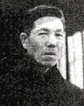

あるＣＯ患者の死が語るもの

「私は、大阪在住の62歳の男性、荒尾市の西原社宅に住んでいました」というメールをいただいたのが
今年6月 。 そのお父さんの山崎辰秀さんは、明治44年、熊本県玉名郡長洲町生まれ。昭和16年、三井三池炭鉱に入社。坑外勤務員として表 彰も受けた。しかし、昭和34年から同35年にかけて繰り広げられた三池闘争の敗北後、三池労組の組合員だった山崎さんは「クビが いやなら坑内へ下がれ」と会社に強く迫られた。そして、「クビになるよりは」と山崎さんは子供ら家族のために坑内へ下がった。 その1年半目のことだった。昭和38年11月9日午後3時10分頃、三井三池三川鉱第一斜坑で大爆発が起きた。死者458人、ＣＯ中毒 患者約839人の犠牲者を出す大惨事だった。「父ちゃん、生きててよかったね」、当初、助かった夫たちに対する妻たちの声である。 しかし、ＣＯ中毒の恐ろしさは徐々に人格をも破壊していくところにあった。
当日山崎さんは二番方勤務。現場に着いた途端、事故に遭遇した。気がついたら永田整形外科病院のベッドの上だった。間もなく
意識が戻り、話しかけるとニッコリ笑ったが、何故入院しているのか本人にはわからない状態だった。
3男1女を抱えた母親は早朝から夜遅くまで働き、生計を保った。高校1年で退学を考えた長女も働く兄の送金で高校を卒業し、
下の弟二人も働きながら夜間大学を卒業した。
三池争議は働く者およびその家族に何をもたらしたのか。三池争議の延長線上に炭塵大爆発事故があったのではないか。 昭和41年1月30日、山崎辰秀さんはＣＯガスのため両足にマヒが残ったまま一度も退院することなく、55歳定年を迎えた。そして、 炭塵爆発事故から30年以上も入院生活を余儀なくされた平成7年8月15日、奇しくも終戦50周年の日、何ら回復しないまま大牟田労災 病院で亡くなった。享年84歳だった。
いまや両親がいないふるさと三池は山崎さんらにとってどういう存在なのか。単に郷愁だけでは片付けられない重い歴史を、山崎
さん一家は背負ってきた。それは、単に遠い昔の出来事として忘れ去るのではなく、ふるさと三池の歴史として記録し語り継いで
いかなければならない出来事だと、私は思った。
（2006年7月16日 まえかわ）
|